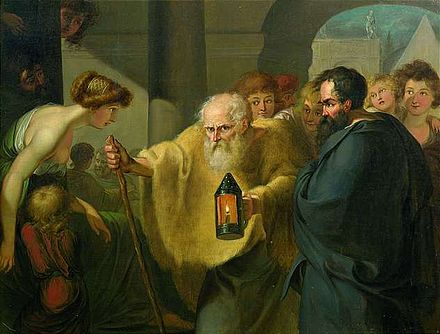
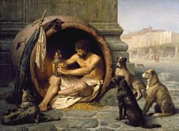

En este portafolio, subiré y compartiré, todos los proyectos personales, o relacionados a mi proyecto de vida, que es la creación multimedial. Sean bienvenidos a este espacio donde exploraré tanto la imagen, como el sonido, y la programación

Se afirma que Diógenes se fue a Atenas con un esclavo llamado Manes, que lo abandonó poco más tarde. Con un humor característico, Diógenes afrontó su mala suerte diciendo: “Si Manes puede vivir sin Diógenes, ¿por qué Diógenes no va a poder sin Manes?”. Diógenes será coherente riéndose de la relación de extrema dependencia entre las personas. Encontró un maestro, que no hacía nada para sí mismo, pero rechazó su ayuda. Le llamó la atención el maestro ascético Antístenes, un discípulo de Sócrates, que, según Platón, había presenciado su muerte. Diógenes pronto superó a su maestro tanto en reputación como austeridad en el modo de vivir. Al contrario que los otros ciudadanos de Atenas, vivió evitando los placeres terrenales. Con esta actitud pretendía poner en evidencia lo que él percibía como locura, fingimiento, vanidad, ascenso social, autoengaño y artificiosidad de la conducta humana.

Las anécdotas que se cuentan sobre Diógenes ilustran la consistencia lógica de su carácter. Este “Sócrates delirante”, como lo llamaba Platón, caminaba descalzo durante todas las estaciones del año, dormía en los pórticos de los templos envuelto únicamente en su manto y tenía por vivienda una tinaja. Cierta vez pensó que le sobraban cosas entre todas sus pertenencias: tenía su bastón, que necesitaba para caminar; tenía su manto, que le cubría y su zurrón, que contenía una escudilla y un cuenco para comer y beber, respectivamente. Un día, en uno de sus paseos por la ciudad, vio cómo un niño comía lentejas en un trozo de pan y cuando al terminar sus lentejas bebió agua con las manos en una fuente y Diógenes pensó: “Este muchacho, dijo, me ha enseñado que todavía tengo cosas superfluas. Si come sus lentejas con un trozo de pan y cuando termina con ellas bebe agua con sus manos, no necesito ni mi escudilla ni mi cuenco" y acto seguido arrojó contra el suelo ambos y siguió caminando.
Cuando Platón le dio la definición de Sócrates del hombre como “bípedo implume”, por lo cual había sido bastante elogiado, Diógenes desplumó un gallo y ante el asombro de los discípulos y del mismo Platón lo soltó en la Academia diciendo: “¡Te he traído un hombre!” y partió entre risas y doblándose sobre sí mismo.
Se dice que una mañana, mientras Diógenes se hallaba absorto en sus pensamientos y tomando el sol fuera del gimnasio que estaba a las afueras de Corinto, había mucho ajetreo. Se decía que el rey, Alejandro Magno, había llegado. Tal era la fama que tenía Diógenes, que el propio Alejandro estaba interesado en conocer al famoso filósofo. Antes de que Diógenes pudiera saber qué ocurría, se vio rodeado por un montón de ciudadanos de Corinto y se produjo el encuentro. Llegó Alejandro acompañado de su escolta y de muchos hombres más. Alejandro Magno se puso frente a él y dijo: "Soy Alejandro", a lo que Diógenes respondió: "Y yo Diógenes, el perro". Hubo murmullos de asombro ante la sorprendente respuesta del sabio pues nadie se atrevía a hablar así al rey. Alejandro preguntó: "¿Por qué te llaman Diógenes, el perro?", a lo que Diógenes le respondió: "Porque alabo a los que me dan, ladro a los que no me dan y a los malos les muerdo". De nuevo, más murmullos, pero Alejandro no se dejó inmutar por esas respuestas y le dijo: "Pídeme lo que quieras". Por lo que Diógenes sin inmutarse le contestó: "Quítate de donde estás que me tapas el sol". Se hizo una exclamación generalizada de todos los presentes ante una petición tan pobre a un hombre que todo lo podía dar. Alejandro, sorprendido, le preguntó: "¿No me temes?", a lo que Diógenes le contestó con gran aplomo con otra pregunta: "Gran Alejandro, ¿te consideras un buen o un mal hombre?" Alejandro le respondió: "Me considero un buen hombre", por lo que Diógenes le dijo: "Entonces... ¿por qué habría de temerte?". Toda la gente se escandalizó. Alejandro pidió silencio y dijo: "Silencio... ¿Sabéis qué os digo a todos? Que si no fuera Alejandro, me gustaría ser Diógenes".
En otra ocasión, Alejandro encontró al filósofo mirando atentamente una pila de huesos humanos. Diógenes dijo: “Estoy buscando los huesos de tu padre, pero no puedo distinguirlos de los de un esclavo”.